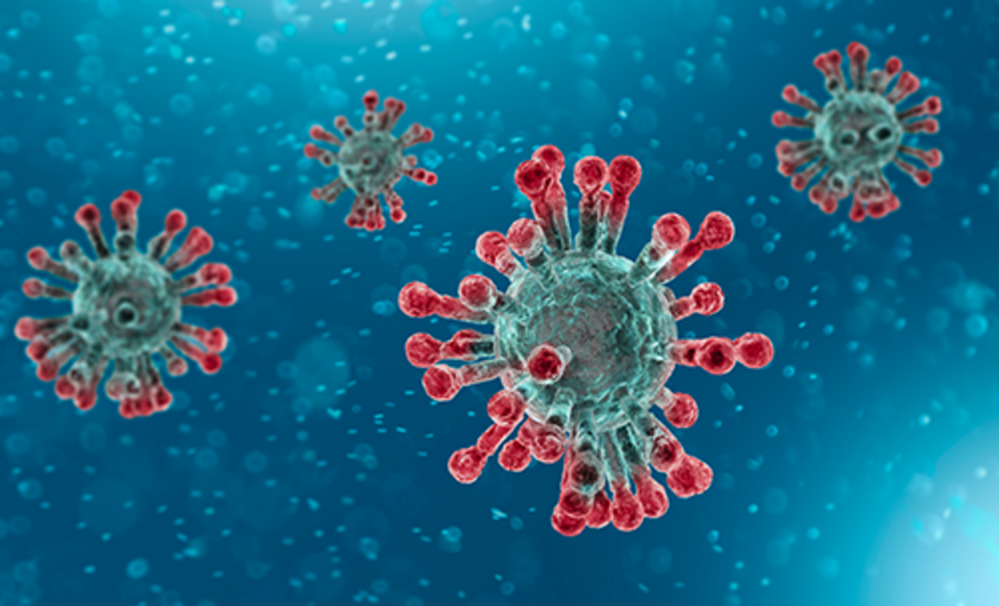

This projects provides data on the number of confirmed Corona virus cases, the number of death cases and the number of recovery cases during the initial period of the Corona virus outbreak. This project provides initial data statistics for whoever is seeking such data.
The information in the About COVID-19 is taken from the official World Health Organization website. The pictures in this project are taken from various websites using google search for Corona Virus. The datasets are taken from the following URL: https://www.kaggle.com/sudalairajkumar/novel-corona-virus-2019-dataset/data#.
Coronaviruses (CoV) are a large family of viruses that cause illness ranging from the common cold to more severe diseases such as Middle East Respiratory Syndrome (MERS-CoV) and Severe Acute Respiratory Syndrome (SARS-CoV). A novel coronavirus (nCoV) known also as COVID-19 is a new strain that has not been previously identified in humans. Coronaviruses are zoonotic, meaning they are transmitted between animals and people. Detailed investigations found that SARS-CoV was transmitted from civet cats to humans and MERS-CoV from dromedary camels to humans. Several known coronaviruses are circulating in animals that have not yet infected humans. Common signs of infection include respiratory symptoms, fever, cough, shortness of breath and breathing difficulties. In more severe cases, infection can cause pneumonia, severe acute respiratory syndrome, kidney failure and even death. Standard recommendations to prevent infection spread include regular hand washing, covering mouth and nose when coughing and sneezing, thoroughly cooking meat and eggs. Avoid close contact with anyone showing symptoms of respiratory illness such as coughing and sneezing .
